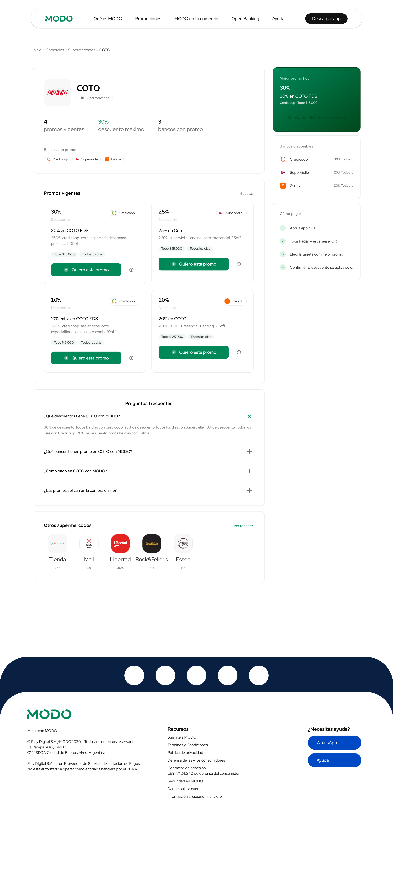
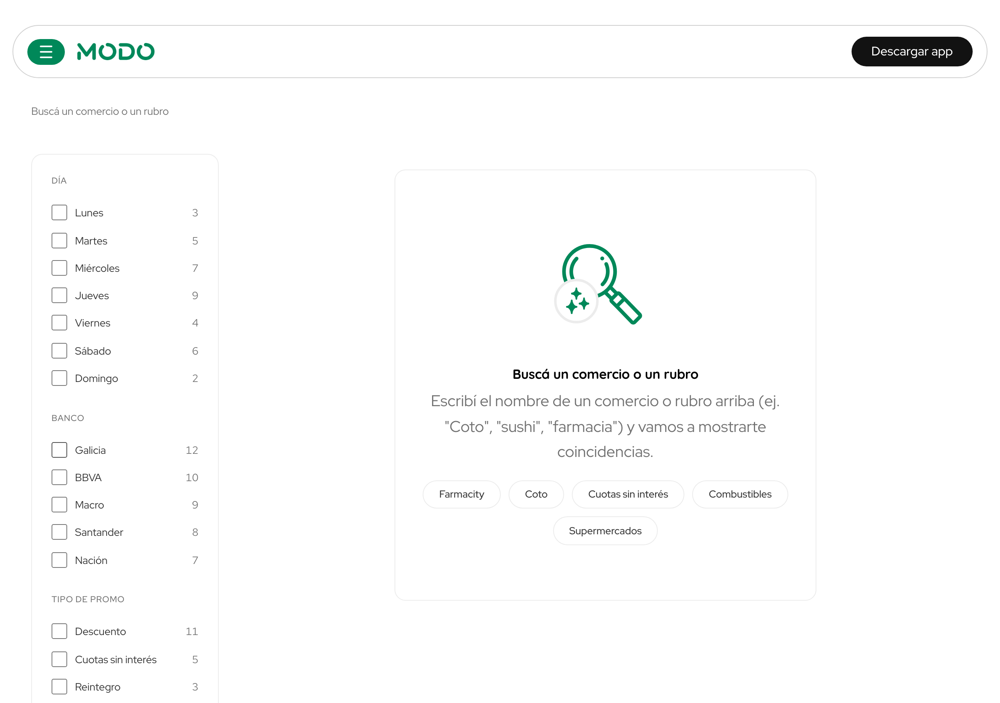
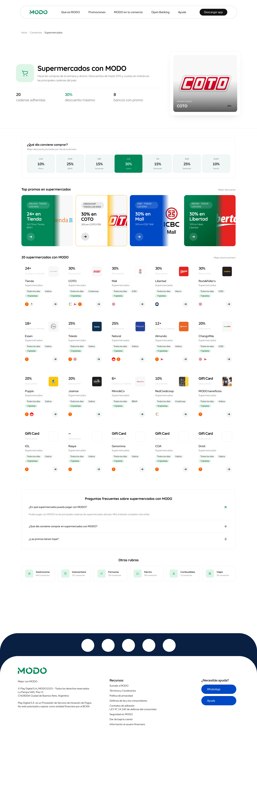

Sprint review · 2026-05-20
POC /Comercios.
URLs canónicas evergreen por comercio, con JSON-LD denso para SEO + GEO. Vivo en QA. Para prod faltan gaps, redirects y validación con varios equipos.
Audiencia
PM · Tech Lead · Manager
Autor
Hernán De Souza
Fecha
20 mayo 2026
TL;DR
Capturamos queries "modo + comercio" en URLs canónicas evergreen.
/comercios/[slug] + 9 rubros + búsqueda + index
red MODO completa con JSON-LD BankOrCreditUnion
LoC en 34 archivos · 10 componentes Comercios/* + BFF + JSON-LD
Próximo paso: Fase 2 comercios-database v0.1 · V1 BFF materializado, V2 geo + branches, V3 UCP/agent.json + 301s. Estimado 3 a 4 semanas.
El problema
"modo coto" rankea, pero la URL muere cada mes.
URL estacional fragmenta autoridad
Hoy "coto modo", "modo carrefour", "promos farmacity" llevan a /promos/[slug]-mar26 que mueren cada mes. Cada renovación reparte equity en lugar de acumularla.
No-brand queries sin landing dedicado
- "changomas": 73k impressions/mes · CTR 0.27% sin URL viva.
- Crawlers AI (GPTBot · ClaudeBot · PerplexityBot) requieren JSON-LD denso para citar.
- Partner no tiene URL evergreen para linkear desde CRM o paid social.
Hipótesis: una URL canónica evergreen por comercio captura tráfico non-brand, da equity acumulable a modo.com.ar y habilita citation por LLMs.
Surface POC · branch feat/comercios-mvp-2026-05-15
4 rutas + BFF composer + JSON-LD emitter.
Rutas Next 12 · Pages Router · SSG + ISR 1h
Capa de datos · JSON-LD · CMS
Composición build/ISR contra BFF promos · sin pipeline batch · sin nuevo backend. Total: 34 archivos · 6.877 LoC.
/comercios · hub principal
El punto de entrada al directorio.

Es la página que va a llevarse el tráfico orgánico de búsquedas tipo "comercios con descuento MODO" y la que las IAs scrapean primero para contestar "¿qué descuentos hay?".
Qué hay en la pantalla
- Hero con copy de marca + card rotativa de comercio destacado
- 3 stats: 2.500+ comercios, 30+ bancos, 40% máximo
- Buscador inline + featured banners (Changomás, McDonald's, Farmacity)
- Grid completa de comercios con promo vigente
/comercios/coto · detalle por comercio
URL canónica evergreen por marca.

Cada comercio tiene su URL fija e indexable. Cuando alguien busca "descuento Coto MODO" en Google o le pregunta a una IA, esto es lo que llega: una página con la mejor promo del día arriba y todas las promos vigentes abajo, con bancos linkeados.
Qué hay en la pantalla
- Breadcrumbs Inicio · Comercios · Supermercados · COTO
- Hero del merchant: nombre, rubro, 3 stats (promos / descuento máx / bancos)
- Panel "Mejor promo hoy" en verde, con CTA
- Lista de promos vigentes + lista de bancos disponibles
- JSON-LD: LocalBusiness + Offer por promo + BreadcrumbList
/comercios/buscar · buscador
Para cuando el usuario ya sabe qué busca.

Search full-text sobre nombre del comercio, banco o rubro. El recient fix del filtro hace que "Macro" matchee al banco y devuelva todos los comercios con su promo, no solo merchants con "Macro" en el nombre.
Qué hay en la pantalla
- Input arriba con placeholder claro
- Sidebar de filtros (rubro, banco)
- Empty state amable con ejemplos clickeables (Farmacity, Coto, Macro, Combustibles)
- Tracking: query event a Amplitude para entender qué busca la gente
/comercios/rubro/supermercados · listing por rubro
SEO programático por categoría.

Una página por rubro (supermercados, gastronomía, indumentaria, farmacias…). Captura tráfico de búsquedas tipo "supermercados con descuento" sin depender de la marca del comercio. URL limpia, indexable, evergreen.
Qué hay en la pantalla
- Hero del rubro con icono + copy + 3 stats (cadenas / descuento máx / bancos)
- Featured card del rubro (en este caso BNA+ Tienda)
- Grid filtrada de comercios del rubro
- JSON-LD: ItemList con merchants + BreadcrumbList
- FAQ accordion al final ("¿Qué día conviene comprar?")
Cómo lo construimos
Harness de desarrollo · sin atropellar la calidad.
Cada cambio que entra a la POC pasó por estos 6 pasos. No es jerga: es la forma de que no se nos rompa nada cuando estamos a las apuradas.
Antes de tocar código, escribimos la spec.
La spec es el contrato con producto y UX. Si después aparece una duda en la implementación, hay un papel que decide. No discutimos por memoria.
Test primero · rojo, después verde.
Escribimos un test que falla a propósito (rojo). Después el código mínimo que lo hace pasar (verde). Cada línea nace con su prueba al lado.
Chico, mediano, grande.
Unit (una función sola), integración (un componente con su entorno), end-to-end (un robot navegando como un usuario de verdad). Cada nivel agarra bugs distintos.
Un robot recorre las pantallas antes de prod.
Playwright abre Chrome, hace click, llena formularios y valida que todo responda. Si una pantalla falla, el deploy se frena solo.
Docs en el mismo repo, no en una wiki olvidada.
PRD (qué pide producto), RFC (qué proponemos técnicamente), README (cómo arrancarlo), ADR (qué decidimos y por qué). El equipo y las IAs los leen para entender contexto.
Cada cambio corre todos los tests viejos.
Si algo que antes funcionaba se rompe, los tests lo agarran antes de mergear. No nos enteramos por un usuario enojado.
src/components/Comercios/
10 primitives · tipografía + grilla paritaria con promoshub.
HeroMerchantRotator
Cross-fade animado entre comercios destacados. Reemplazó hero estático.
MerchantGrid
repeat(auto-fill, minmax(190px, 1fr)) · paginación con "Mostrar más" + IntersectionObserver.
MerchantCard · PromoCard
Sin border sólido, jerarquía visual igualada con /promos. Logos de banco 20px object-cover.
BankChip · RubroChips
Banco con logo CDN playdigital, fallback iniciales. 9 rubros canónicos filtrables.
MerchantSidebar · FaqAccordion
Sidebar con CTA + canales + bancos. FAQ accordion accesible para FAQPage JSON-LD.
MerchantCard.spec · MerchantGrid.spec
12/12 tests passing · TDD red → green → refactor por task openspec.
Paridad visual con promoshub.modo.com.ar
Misma tipografía, misma grilla, identidad MODO.
Quicksand + Red Hat Display
- Titles en Quicksand · body Red Hat Display.
- Tokens design system: rewards-xl-bold, callout-medium, overline-l-medium.
- Números con font-variant-numeric: tabular-nums para alineación pixel-perfect.
Paleta vibrante MODO
- Verde default #008859 usado como acento, no como fondo masivo.
- SVG hero real · mosaico de beneficios · feel nativo (no stock).
- Tailwind utility-only · 0 CSS modules · 0 styled-components nuevos.
Mobile sticky CTA en detalle. CTA primary: "Activá MODO en tu banco" → /cuentas-modo (ToFu non-MODO first).
Pilar 1 · indexabilidad + citation por LLMs
JSON-LD denso, SSR real, ISR 1h, tolerancia Storyblok.
| Page | Schemas emitidos |
|---|---|
| /comercios | CollectionPage · ItemList · Breadcrumb · FAQPage |
| /[slug] | LocalBusiness · Offer[] · Breadcrumb · FAQPage |
| /rubro/[rubro] | CollectionPage · ItemList · Breadcrumb · FAQPage |
| /buscar | SearchAction · Breadcrumb |
Stack GEO en marcha
Lo que ya está vivo en prod (modo.com.ar) + lo que la POC suma en QA.
- Organization + WebSite + SearchAction globales en todas las pages (live en prod).
- 37 entidades BankOrCreditUnion de la red MODO en modo.com.ar/bancos (live en prod).
- llms.txt + canonical + hreflang + AI-crawlers permitidos (live en prod).
- ISR 1h · BFF cache 5 min · /api/revalidate on-demand (QA, POC).
- Storyblok 401/5xx tolerado · no rompe static export (QA, POC).
Anti-hallucination invariant: composer JSON-LD nunca calcula · valores literales del BFF · legal-crítico (Ley 24.240).
Gaps abiertos · backlog inmediato
Lo que la POC no resuelve todavía.
Dentro de la POC
- 4 rutas SSR/ISR + on-demand revalidation.
- JSON-LD denso · 7 schemas por surface.
- Composición desde BFF promos · sin batch nightly.
- 10 componentes Comercios/* + paridad visual con promoshub.
Pendientes
Bloqueantes para prod
- Mover la /comercios actual a /modo-en-tu-comercio con 301 (libera la URL para la POC).
- 301 desde /promos/[slug]-[mes] caducas.
- Migración 301 de subdominios legacy (staging leak).
Fase 2 · backlog
- Geolocalización + branches (reemplazo de stores-maps-lib).
- Hubs por banco /comercios/banco/[banco] × 25.
- UCP/AP2 manifests · agent.json + ucp.json.
El reroute de /comercios es bloqueante para prod: hoy esa URL sirve la página vieja de adquisición, no la POC.
Track paralelo · v0.1
comercios-database en 3 versiones.
Snapshot del catálogo
Materializar el BFF promos en DB propia. Habilita queries que hoy no existen.
Sucursales + cobertura
Branches con lat/long + horarios. Desbloquea LocalBusiness real y mapas.
Agentic surface
Manifests UCP/AP2 + MCP público + 301s desde URLs caducas.
Docs canónicos en docs/comercios-database/.
A resolver esta semana
3 decisiones para release a prod + Fase 2.
-
Release a prod + reroute de la página vieja a /modo-en-tu-comercio
QA visual + Rich Results Test + legal review + decisión sobre staging leak.
Owner: PM + Tech Lead · Deadline: 2026-05-23
-
Owner técnico de Fase 2 · comercios-database
V1 BFF materializado necesita developer dedicado + apoyo backend. Capacity check del sprint.
Owner: Tech Lead + Manager
-
Scope Jira · EXA-comercios → COENXT-XXX
Board oficial COENXT 4716. Definir si re-etiquetamos commits viejos o solo desde el próximo PR.
Owner: Tech Lead
Gracias · busco feedback
/comercios está vivo en QA. Para ir a prod hay que alinear equipos.
El deck reporta estado y propone próximos pasos. No decide nada por sí solo.
Quiénes opinan antes de prod / Fase 2
QA · smoke E2E · Legal · copy y datos de bancos · SEO · JSON-LD y canonicals · PM · prioridad Fase 2 · Brand · paridad visual con promoshub.
Material de soporte
Live en QA: www.qa.modo.com.ar/comercios · /comercios/coto · /comercios/buscar · /comercios/rubro/<rubro>
Docs: docs/comercios/README.md · PRD + RFC + UX corrections
Tracking: Jira COENXT 4716 · branch feat/comercios-mvp-2026-05-15
Autor
Hernán De Souza
Tickets
COENXT board 4716
Repo
playsistemico/modo-landing